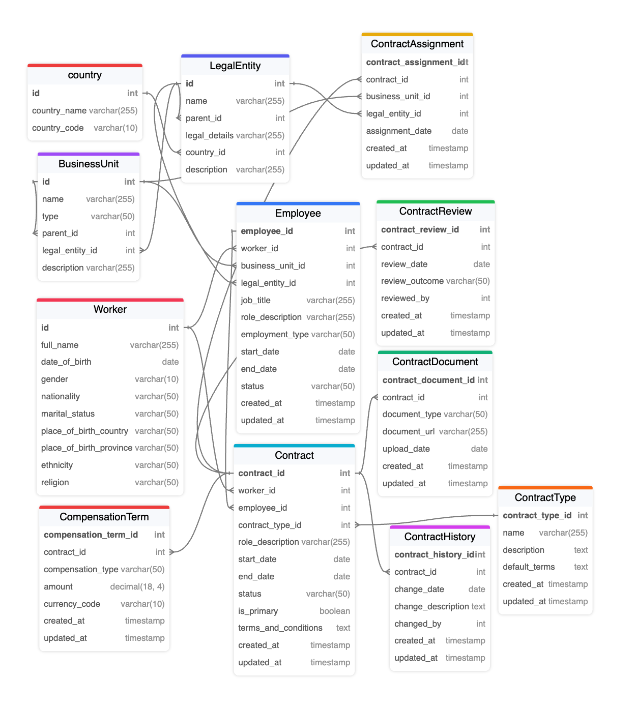

Understanding the Role of Contract in the Model
The Contract entity plays a central role in managing employment relationships within the HR model. It serves as the bridge between a Worker and their specific employment terms with a Business Unit under a Legal Entity. Here is a detailed explanation of the role and purpose of the Contract entity:
- Defining the Terms of Employment:
- The
Contractentity is used to store the terms and conditions under which aWorkeris employed by aLegal Entity. This includes critical information such as the type of contract (e.g., probation, fixed-term, indefinite), role description, start date, end date, and any specific terms or conditions that apply. - The
Contractentity allows organizations to manage different types of employment relationships flexibly, such as temporary contracts, permanent positions, consultancy agreements, project-based roles, or dual roles (cumulated jobs).
- Tracking Employment Lifecycle:
- A
Workermay have multiple contracts over their career with the same Legal Entity. Each new Contract represents a different phase in their employment lifecycle, from probation to fixed-term and finally indefinite contracts. - By linking each contract to a specific
Employee, the model ensures that the entire employment history is tracked. This is useful for HR reporting, performance management, and ensuring compliance with labor laws and company policies.
- Supporting Multiple and Overlapping Roles:
- The
Contractentity supports the ability for a Worker to hold multiple roles within the same Legal Entity. For example, a Worker might have a primary contract as a full-time employee and a secondary contract as a part-time consultant or project manager. - Each of these roles is captured as a separate Contract linked to the same Employee entity. This setup allows for accurate tracking of the terms, duration, and conditions associated with each role, even if they overlap in time.
- Ensuring Legal Compliance and Record Keeping:
- Contracts must be carefully managed to ensure compliance with labor laws and organizational policies. The
Contractentity includes fields such as status (e.g., active, terminated, expired), which help in managing the lifecycle and validity of each contract. - Additionally, the entity can store specific contractual clauses or amendments through the
ContractDocumentandContractHistoryentities, providing a complete record of contractual changes and ensuring transparency and compliance.
- Flexibility in Employment Management:
- The
Contractentity allows for the management of diverse employment scenarios, including part-time, full-time, consultancy, project-based, or even intern roles. By capturing thecontract_type, organizations can categorize and manage various employment agreements easily. - The
is_primaryfield helps distinguish the main contract for the employee from additional secondary contracts, providing clarity in managing concurrent employment terms.
Understanding the Role of Employee in the Model
The Employee entity represents a formalized employment relationship between a Worker and a Business Unit under a Legal Entity. It captures the overall employment status, job role, and conditions of employment for a Worker. Here is a detailed explanation of the role and purpose of the Employee entity:
- Centralized Representation of Employment:
- The
Employeeentity serves as a central point for representing the overall employment of aWorkerwithin aBusiness Unitunder a specificLegal Entity. It captures the key attributes of the employment relationship, such as job title, role description, employment type (e.g., full-time, part-time), start date, end date, and status (e.g., active, terminated). - This centralized view allows the organization to manage an employee's current status and historical employment information comprehensively.
- Handling Employment Continuity:
- When a Worker signs new contracts (such as moving from a probationary period to a permanent role), the
Employeeentity remains the same, ensuring continuity in their employment record. Each new contract is linked to this Employee to reflect the new terms without creating a new Employee record. - This approach provides a continuous and unified employment history for each Worker, which is essential for accurate HR reporting, performance appraisals, compensation management, and benefits administration.
- Linking Workers to Business Units and Legal Entities:
- The
Employeeentity links aWorkerto a specificBusiness UnitandLegal Entity, capturing the structure and reporting relationships within the organization. - This linkage helps determine which part of the organization a worker is associated with, enabling accurate tracking of their roles, responsibilities, and contributions. It also helps ensure that all employment relationships are correctly aligned with the legal framework under which the organization operates.
- Support for Multiple Employee Records for Different Legal Entities:
- If a Worker is employed by multiple Legal Entities within the same group or organization, they will have separate Employee entities for each Legal Entity. This distinction is crucial for legal and regulatory compliance, as different Legal Entities may have different policies, compensation structures, and compliance requirements.
- This ensures that each employment instance is managed according to the specific rules and regulations applicable to each Legal Entity, avoiding legal conflicts and maintaining clarity in employment terms.
- Tracking Job Roles and Career Progression:
- The
Employeeentity captures information about the worker's job title and role description, providing a clear view of their current and past roles within the organization. This information is essential for managing career progression, promotions, and role changes over time. - It also supports talent management processes such as performance management, succession planning, and learning and development, as it provides a consolidated view of an employee's role and status within the organization.
Conclusion:
- The
Contractentity provides the flexibility to manage multiple employment terms, track changes in employment conditions, and ensure legal compliance through detailed contract management. - The
Employeeentity represents a continuous employment relationship within a Business Unit and Legal Entity, allowing for a clear and comprehensive view of an employee's status, history, and contributions to the organization. - Together, these entities create a robust and flexible model that supports complex employment scenarios, dynamic organizational structures, and comprehensive HR management within an organization using this model.
Understanding the Role of ContractAssignment:
- Linking
Contractto Specific Business Units:
- While the
Employeeentity links aWorkerto aBusinessUnitand aLegalEntityat a broader level, theContractAssignmententity provides a more granular linkage between aContractand the specific Business Units or subunits where theWorkeris actually assigned to work. - This is especially useful in organizations with complex structures where a
Workermay have a primary association with a parent Business Unit but needs to perform work or have roles that span across various subunits or departments within that Business Unit.
- Detailed Assignment Management:
- The
ContractAssignmententity allows the system to capture assignments that go beyond just a single Business Unit. For example, a Worker under the Legal Entity "ABC Corp" may be officially an employee of the Business Unit "Sales Division," but they might be assigned to a more specific department, such as "Field Sales" or "Inside Sales," for specific roles or projects. - This entity can be particularly useful for managing temporary assignments, rotations, project-based work, or dual roles within different subunits of the same Business Unit.
- Granular Role Management:
- The
ContractAssignmenttable provides the ability to manage Worker roles within the exact unit or team they are assigned to. This allows for:- Specific Role Definitions: Defining specific roles or responsibilities that might differ slightly from the more general job title or role defined in the
Employeeentity. - Flexibility in Work Assignments: Accommodating part-time roles, cumulated roles (dual employment), or project-based assignments that are time-bound or limited to a specific scope within the Business Unit.
- Specific Role Definitions: Defining specific roles or responsibilities that might differ slightly from the more general job title or role defined in the
- Reflecting Hierarchical Structures:
- In large organizations, Business Units may have complex hierarchies. A parent Business Unit could oversee multiple subunits.
ContractAssignmenthelps in representing where the Worker is effectively working or to which subunits they are contributing. This is crucial for:- Reporting and Management: Facilitating accurate reporting on which subunit a worker is contributing to.
- Performance Evaluation: Evaluating the performance of a Worker in the context of the specific unit or project they are assigned to, rather than just a broad unit.
Conclusion:
The ContractAssignment entity is vital for adding flexibility and granularity to the model by linking Contracts to more specific Business Units or subunits where the actual work takes place. It provides the system with the ability to manage complex organizational structures and allows for precise assignments of workers to various subunits or roles within a larger Business Unit. This is particularly important for organizations that manage diverse and dynamic work environments, where employees might take on multiple roles, work on multiple projects, or switch departments frequently.
Dưới đây là nội dung chi tiết giải thích vai trò và ý nghĩa của các thực thể ContractReview, ContractHistory, ContractType, và CompensationTerm trong mô hình quản lý hợp đồng và nhân sự của mô hình này.
Understanding the Role of ContractReview in the Model
- Purpose of
ContractReview:
ContractReviewlà thực thể quản lý quá trình đánh giá và kiểm tra các hợp đồng lao động để đảm bảo rằng chúng luôn tuân thủ các chính sách nội bộ và quy định pháp luật. Mỗi lần đánh giá hợp đồng có thể liên quan đến việc xem xét lại các điều khoản, điều kiện, hoặc các yếu tố khác của hợp đồng.- Nó đóng vai trò như một cơ chế giám sát để đảm bảo rằng tất cả các hợp đồng lao động luôn hợp lệ, chính xác, và phù hợp với các yêu cầu của tổ chức và pháp luật.
- Tracking and Documenting Contract Reviews:
- Mỗi khi một hợp đồng được đánh giá, một bản ghi trong
ContractReviewsẽ được tạo ra, bao gồm các thông tin như ngày đánh giá, kết quả đánh giá (e.g., "Đã phê duyệt", "Cần chỉnh sửa"), và người thực hiện đánh giá. - Điều này giúp tổ chức duy trì lịch sử đánh giá chi tiết của từng hợp đồng, đảm bảo rằng mọi thay đổi hoặc xác nhận đều được ghi nhận một cách minh bạch và có thể kiểm chứng.
- Ensuring Compliance and Quality Control:
ContractReviewđảm bảo rằng các hợp đồng được cập nhật theo những thay đổi mới nhất của pháp luật hoặc chính sách công ty. Điều này đặc biệt quan trọng khi có các điều chỉnh về lương, phúc lợi, hoặc các quy định mới từ phía chính phủ.- Bằng cách lưu trữ chi tiết các đánh giá, tổ chức có thể thực hiện các biện pháp điều chỉnh kịp thời, giúp duy trì sự tuân thủ và chất lượng trong quản lý nhân sự.
Understanding the Role of ContractHistory in the Model
- Purpose of
ContractHistory:
ContractHistorylà thực thể lưu trữ lịch sử các thay đổi của hợp đồng, chẳng hạn như gia hạn, sửa đổi, hoặc cập nhật các điều khoản. Nó cho phép theo dõi tất cả các thay đổi đã diễn ra đối với một hợp đồng cụ thể qua thời gian.- Mỗi lần hợp đồng được sửa đổi hoặc cập nhật, một bản ghi mới được thêm vào
ContractHistoryđể phản ánh những thay đổi đó.
- Detailed Change Tracking:
- Thực thể này bao gồm các thông tin như ngày thay đổi, mô tả thay đổi, và người thực hiện thay đổi. Điều này giúp tổ chức duy trì một lịch sử chi tiết và chính xác về các điều chỉnh hợp đồng, hỗ trợ việc xem xét và giải quyết tranh chấp trong tương lai.
- Nó cung cấp sự minh bạch trong việc quản lý hợp đồng, giúp các bên liên quan có thể theo dõi và kiểm tra lại những thay đổi bất cứ lúc nào.
- Supporting Contract Amendments and Renewals:
- Khi cần thay đổi hoặc gia hạn hợp đồng,
ContractHistorycho phép quản lý dễ dàng các phiên bản hợp đồng mới và cũ. Thực thể này giúp tạo ra một lộ trình rõ ràng của các sự kiện đã diễn ra, đảm bảo rằng các hợp đồng luôn được cập nhật và chính xác.
Understanding the Role of ContractType in the Model
- Purpose of
ContractType:
ContractTypeđịnh nghĩa các loại hợp đồng khác nhau có thể được sử dụng trong tổ chức, ví dụ như hợp đồng thử việc, hợp đồng thời hạn cố định, hợp đồng không thời hạn, v.v.- Nó cung cấp một cấu trúc chuẩn để xác định các loại hợp đồng và các điều khoản mặc định liên quan, giúp chuẩn hóa việc quản lý hợp đồng trong toàn bộ tổ chức.
- Standardizing Contract Management:
- Bằng cách định nghĩa các loại hợp đồng khác nhau,
ContractTypegiúp tổ chức dễ dàng quản lý và theo dõi các hợp đồng lao động theo từng loại. Điều này làm cho việc xác định quyền lợi, trách nhiệm, và nghĩa vụ của cả nhân viên và tổ chức trở nên rõ ràng hơn. - Các loại hợp đồng cũng giúp thiết lập các kỳ vọng rõ ràng từ đầu cho nhân viên và quản lý, giảm thiểu rủi ro về tranh chấp trong tương lai.
- Facilitating Reporting and Compliance:
- Thực thể này cũng giúp việc tạo báo cáo và phân tích dễ dàng hơn, vì các hợp đồng có thể được phân loại và truy xuất dựa trên loại hợp đồng. Điều này hỗ trợ việc kiểm tra tuân thủ và quản lý chính sách.
Understanding the Role of CompensationTerm in the Model
- Purpose of
CompensationTerm:
CompensationTermlà thực thể lưu trữ các thông tin liên quan đến các điều khoản bồi thường trong hợp đồng, bao gồm mức lương, thưởng, và phúc lợi khác.- Mỗi
Contractcó thể liên kết với một hoặc nhiềuCompensationTermđể định rõ các khoản bồi thường cụ thể mà nhân viên được hưởng theo hợp đồng đó.
- Managing Diverse Compensation Structures:
- Thực thể này cho phép tổ chức quản lý các cấu trúc bồi thường phức tạp, từ các khoản lương cố định đến các khoản thưởng và phúc lợi khác. Điều này giúp đảm bảo rằng tất cả các yếu tố liên quan đến bồi thường đều được ghi nhận và quản lý một cách chi tiết.
- Nó cũng hỗ trợ việc điều chỉnh các điều khoản bồi thường khi có thay đổi về chính sách hoặc khi nhân viên thăng chức, chuyển công tác, hoặc thay đổi vai trò.
- Supporting Financial and HR Planning:
CompensationTermgiúp bộ phận tài chính và nhân sự dự báo chi phí và lên kế hoạch ngân sách. Bằng cách lưu trữ thông tin chi tiết về các khoản bồi thường, tổ chức có thể thực hiện phân tích và báo cáo chính xác hơn về chi phí nhân sự.- Nó cũng hỗ trợ quá trình đánh giá hiệu suất, khi các khoản thưởng và phúc lợi thường liên quan trực tiếp đến kết quả công việc của nhân viên.
Conclusion:
ContractReviewvàContractHistoryđảm bảo rằng các hợp đồng lao động luôn được cập nhật, tuân thủ quy định, và minh bạch trong quản lý.ContractTypechuẩn hóa các loại hợp đồng và hỗ trợ quản lý tuân thủ, phân tích dữ liệu, và quản lý nhân sự.CompensationTermquản lý các điều khoản bồi thường, hỗ trợ lập kế hoạch tài chính và đánh giá hiệu suất nhân viên.